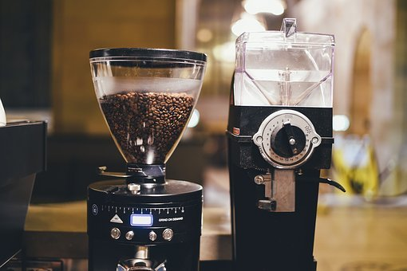

If I define a barista skill, or if I think of what I learned in the SCA barista intermediate course, I can sort out four barista skills.
The first is latte art. I would say the efficiency and speed of beverage making, but in fact, latte art is the flower of coffee making. It's the area with the most variations, and it can give customers much pleasure. Of course, the barista will also be content with the well-made painting.
Latte art is a method of preparing coffee created by pouring microfoam into a shot of espresso and resulting in a pattern or design on the surface of the latte. It can also be created or embellished by simply "drawing" in the top layer of foam. Latte art is particularly difficult to create consistently, due to the demanding conditions required of both the espresso shot and milk. This, in turn, is limited by the experience of the barista and quality of the espresso machine. The pour itself, then, becomes the last challenge for the latte artist. The term is not reserved to latte coffee only, it also applies for other beverages containing milk foam like cappuccino and hot chocolate.
-> Going to watch a video
Coffee tasting is the practice of observing the tastes and aromas of brewed coffee. It is a professional practice but can be done informally by anyone or by professionals known as "Q Graders". A standard coffee cupping procedure involves deeply sniffing the coffee, then loudly slurping the coffee so it spreads to the back of the tongue. The coffee taster attempts to measure aspects of the coffee's taste, specifically the body (the texture or mouthfeel, such as oiliness), sweetness, acidity (a sharp and tangy feeling, like when biting into an orange), flavour (the characters in the cup), and aftertaste. Since coffee beans embody telltale flavours from the region where they were grown, cuppers may attempt to identify the coffee's origin.
Coffee cuppers (professional coffee tasters) often distinguish the coffee's taste (flavor) from its acidity, aroma, and body, or describe the flavor as the quality that remains after those qualities are considered. That kind is too many to write down, and I am very, very weak in the expression of flover.
-> Going to watch a video

The third is grinder calibration. Mocopan Coffee’s Jared Chapman explores the four variables of grinder calibration that impact over- and under-extracted coffee and why coffee is a game of constant tasting.
Taste. Striving for that sweeter, more delicious cup of coffee. This has led to a lot of work being put into understanding the many variables that affect the flavour we end up with in the cup.
The reason these flavours are dominant in under- or over-extracted coffee is that each part of an espresso extraction tastes different – more sour, sweeter, or more bitter. The goal is to have a balance of these flavours to achieve a well-rounded espresso. If we don’t extract the coffee correctly, we’ll have too much of a particular flavour, so it may not be unpleasant, but it won’t be balanced. The main two ways this can happen is by the amount of time that coffee is exposed to water, and the amount of water it is exposed to.
In addition, it is affected by the weather and roasting. In some cases, the degree of grinding naturally changes with peak time, and above all, the barista himself must do the dosing and leveling correctly.
-> Going to watch a video
The forth is cleaning. Barista should clean the bar as worker of cafe. Hygiene is a must-have thing. Unsanitary cafes do not have good reviews from customers, and good people stay clean.
The best coffee beans cannot make up for the impurities a dirty machine adds to your drinks. Coffee beans contain essential oils. While these oils are responsible for the rich crema that tops your espresso, it can also be responsible for a rancid off flavor that develops over time. Those oils emulsify and cling to and behind the water screen of your espresso machine, doubly so on brass surfaces. These oils also leave a film on the filter basket and portafilter. Over time this film will start to plug the holes of the filter basket and create deposits inside the portafilter spout. Luckily these impurities are relatively easy to remove IF you follow a regular cleaning schedule.
Does this sounds a little excessive to you? Perhaps it will help to see what a portafilter might look like after a hard day at a busy café if it's not cleaned properly (shown next to new portafilter): Of course nobody should ever let their portafilter reach this degree of filthiness. The results in the cup with be dramatic and unpleasant. Even in a café this is not acceptable, though there one has the (weak) excuse of being very busy. Keeping your espresso machine clean will not only help maintain the quality of your espresso but also extend the life of the machine.
-> Going to watch a video